Novedades de Maxycraft 3
- Jugar con amigosAbre tu isla y pasa un código de seis letras: hasta 6 jugadores, cada uno en su ordenador y sin servidor. Chat, gestos, regalos y viajes en avioneta todos juntos.
- Islas grandesBosque, pradera, bambú, montañas con nieve y playa. Ríos que bajan en cascadas.
- Islas misteriosas nuevasUn volcán con ríos de magma, cristales de amatista, una isla nevada y setas gigantes.
- Vecinos con personalidadVecinos más monos, 14 personajes nuevos que se encuentran de viaje y un álbum para conocerlos.
- Construye su casaCon un plano de casa levantas, bloque a bloque, la casa de tu próximo vecino. Luego vas a buscarlo.
- Luz de verdadAntorchas, farolas y lámparas que alumbran alrededor, y una antorcha en la otra mano para las cuevas.
- Más bloquesLadrillo, cristal, losas, escaleras, caminos, calles, cofres, puertas y vallas que no se saltan.
- Días y estacionesUn día dura unos minutos (o lo que tú elijas) y cada estación una semana de juego.
Un paseo por la isla
Capturas
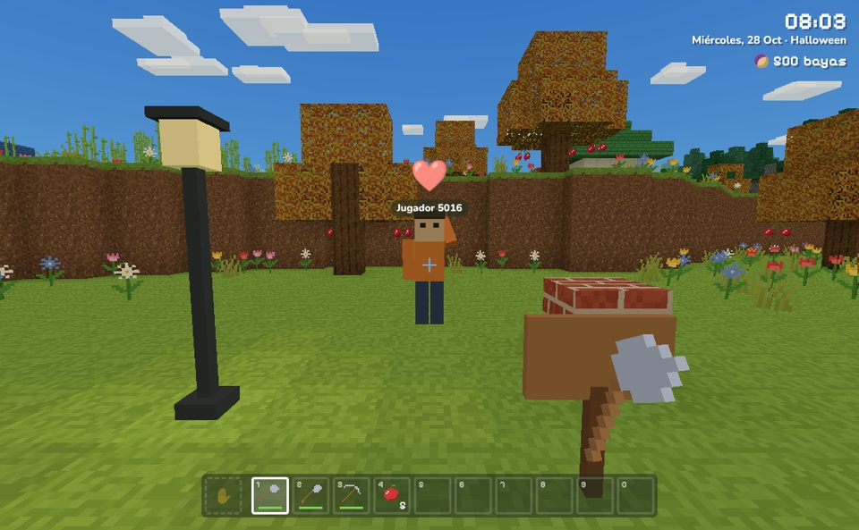
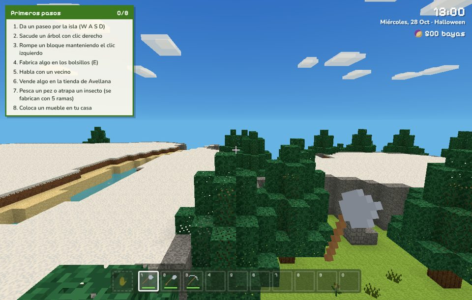
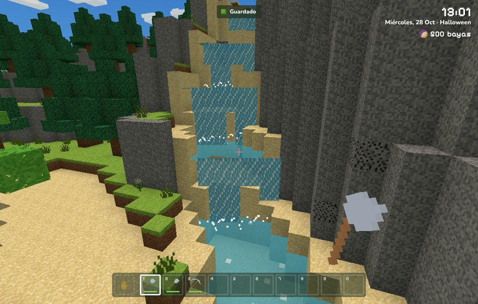
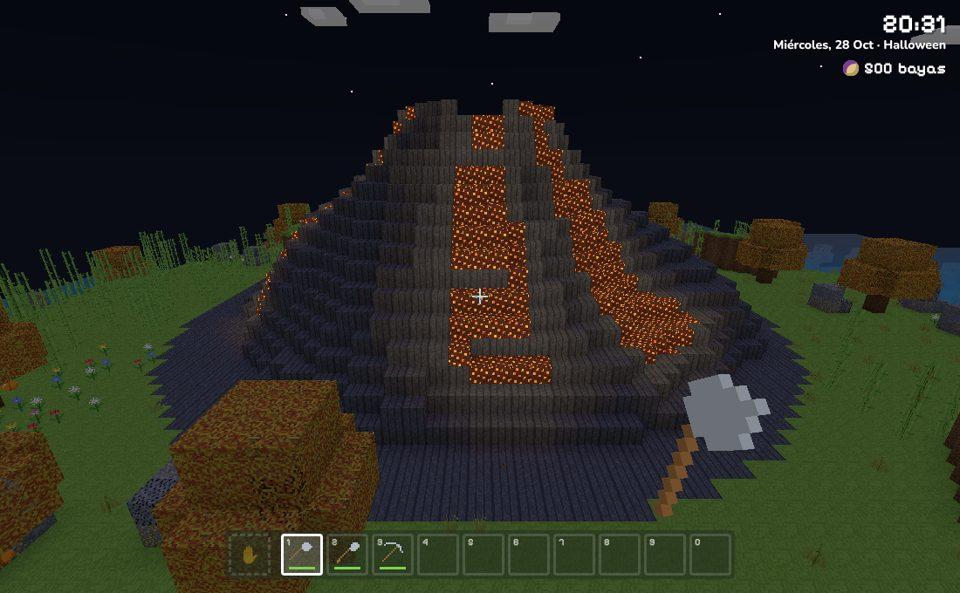
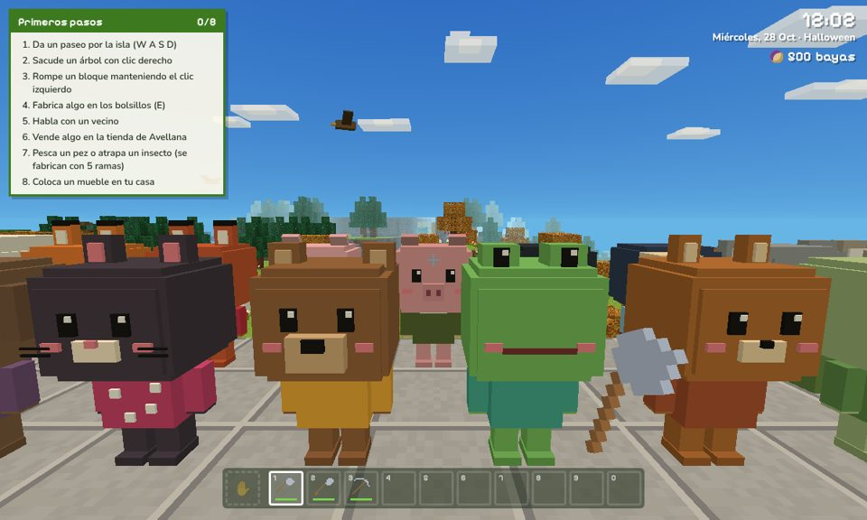
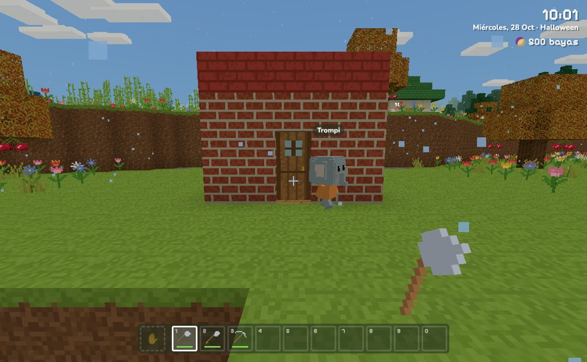
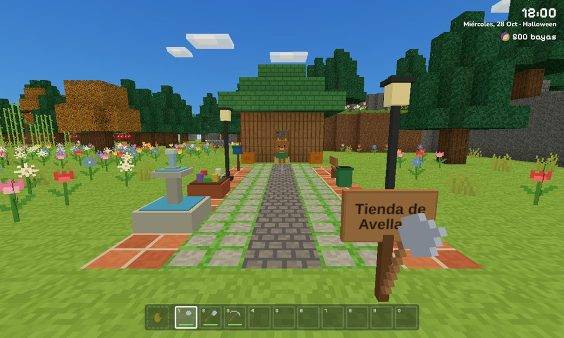
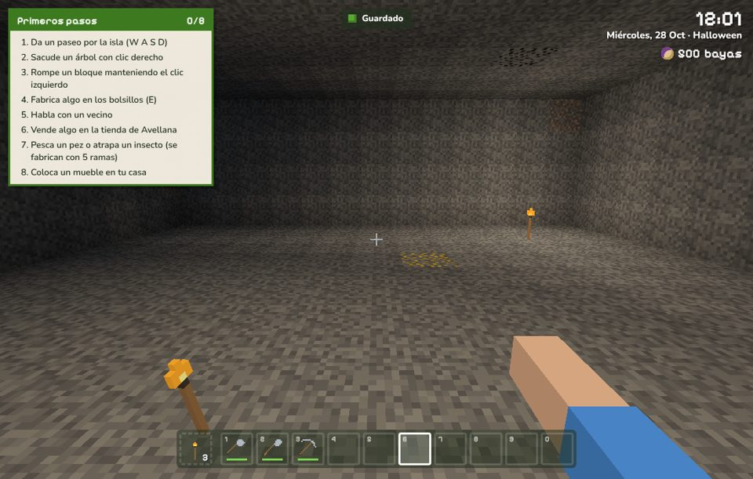
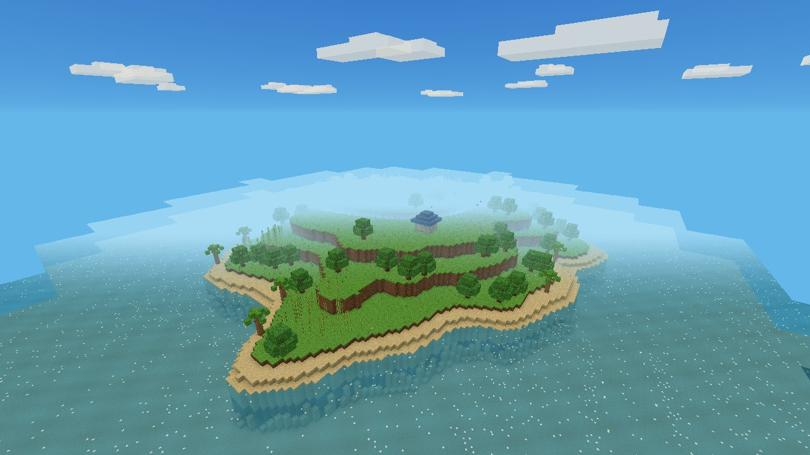
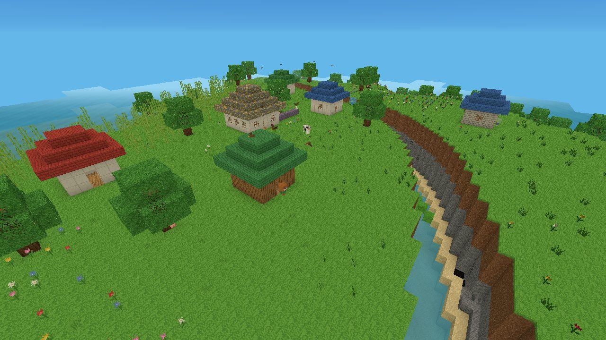
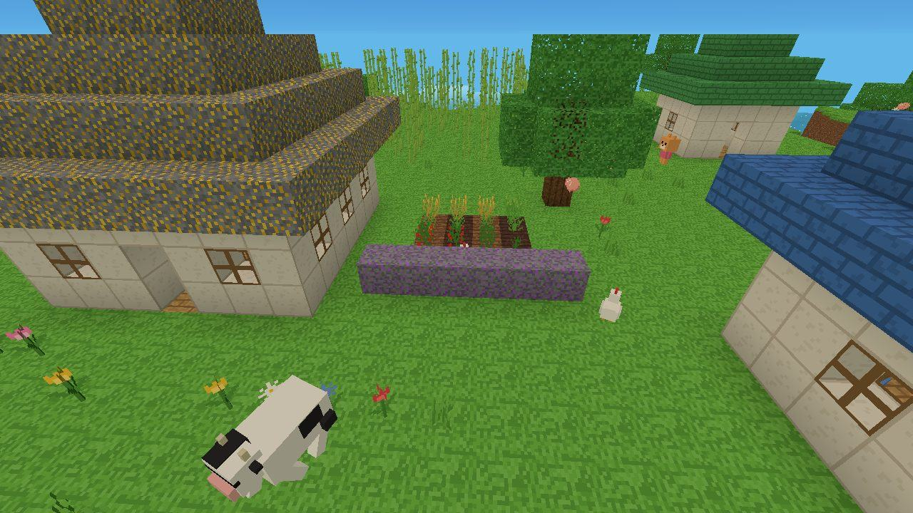
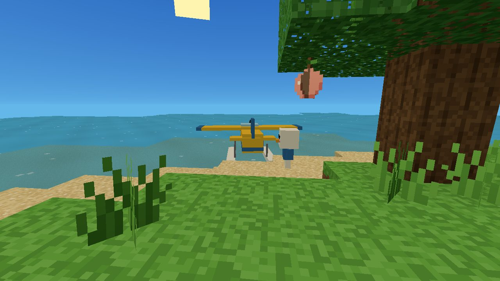
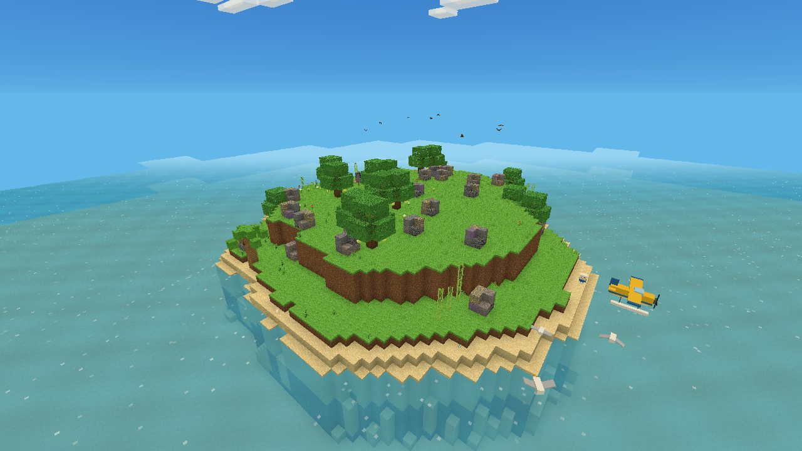
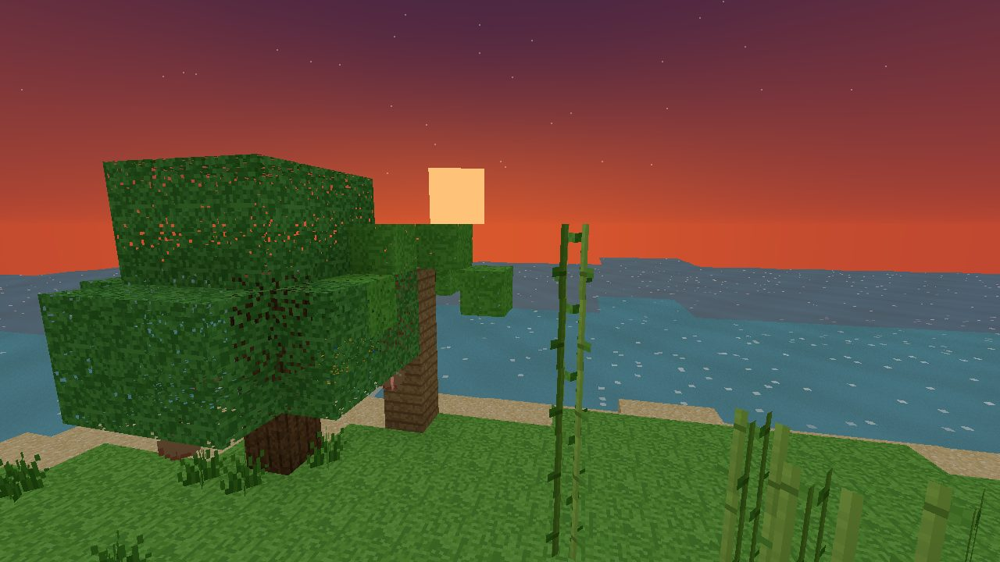
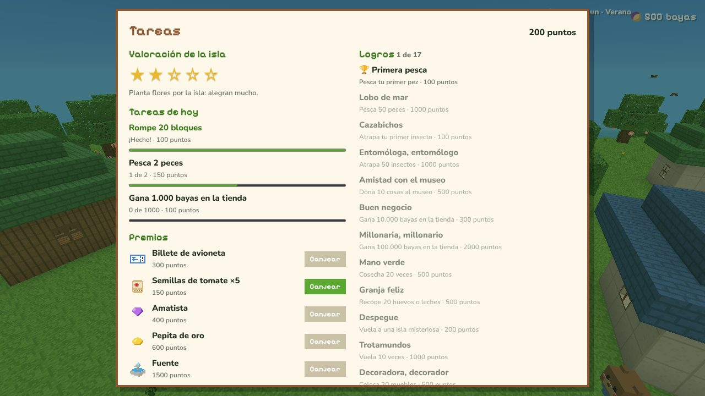
Qué se puede hacer
- ConstruirRompe y coloca bloques, fabrica en la mesa de trabajo y amplía tu casa de tienda de campaña a casa grande.
- VecinosCharla, haz regalos y celebra sus cumpleaños. Invita a nuevos vecinos que conoces de viaje.
- Pesca e insectosPeces e insectos que cambian con la estación, una enciclopedia y un museo para donarlos.
- Huerto y granjaPlanta trigo, zanahorias y tomates, cuida gallinas y vacas y cocina pan, tortilla o pastel.
- ViajesVuela en avioneta a islas misteriosas con frutas que valen cinco veces más.
- MetasTres tareas nuevas cada día, 17 logros, premios exclusivos y valoración de 1 a 5 estrellas.
- Mundo vivoDía y noche, estaciones, tiempo cambiante, fiestas, pájaros, cascadas y viento.
- Para todosControles táctiles, teclas a tu gusto, texto grande y colores para daltonismo. Hasta 3 islas guardadas y copias de seguridad.
Controles
- W A S D
- Andar (o las flechas)
- Espacio
- Saltar y nadar
- Clic izquierdo
- Romper, pescar o atrapar
- Clic derecho
- Usar, colocar, hablar
- E
- Bolsillos y cocina
- T
- Tareas del día
- Q
- Cambiar de mano (la antorcha a la otra mano)
- Intro / G
- Chat y gestos con amigos
- Esc
- Menú y opciones (ahí se pueden cambiar las teclas)